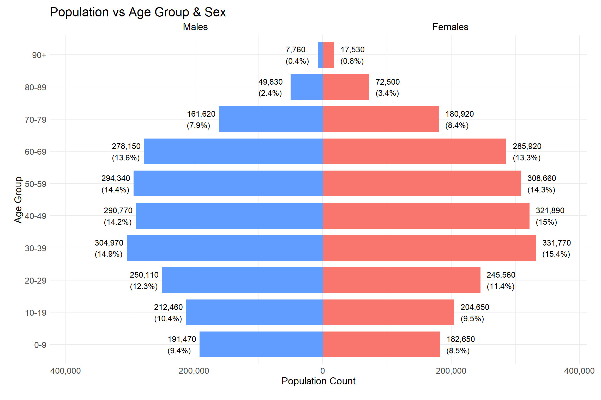
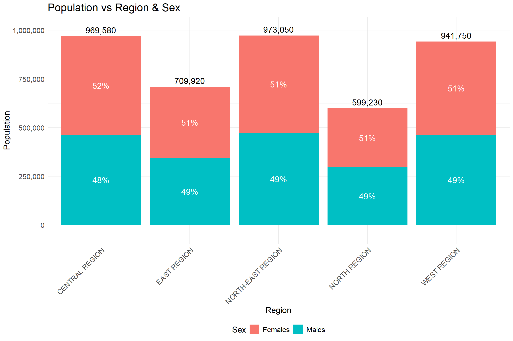
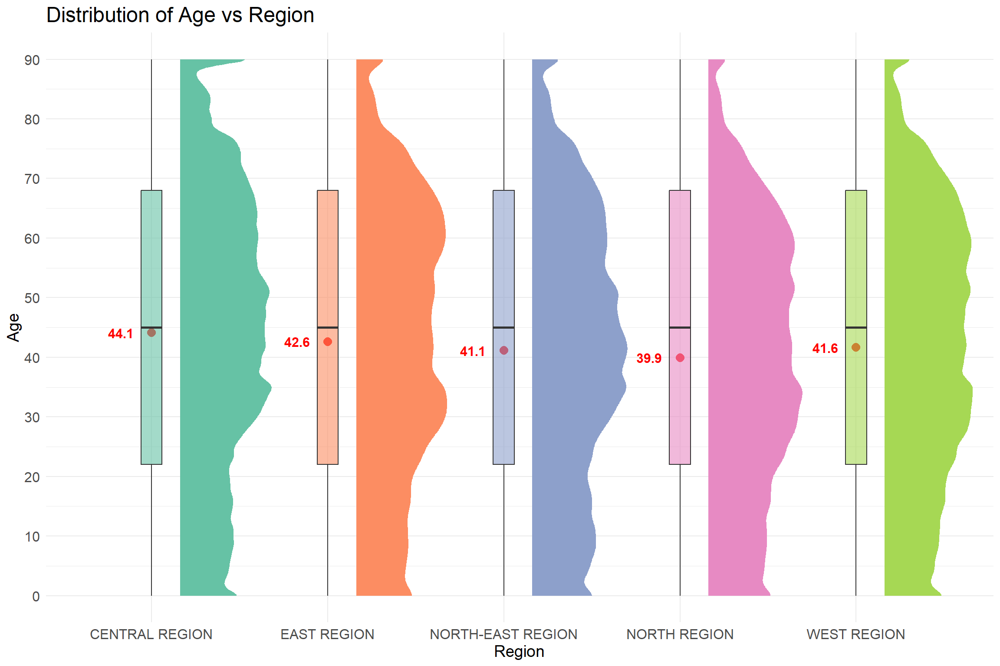
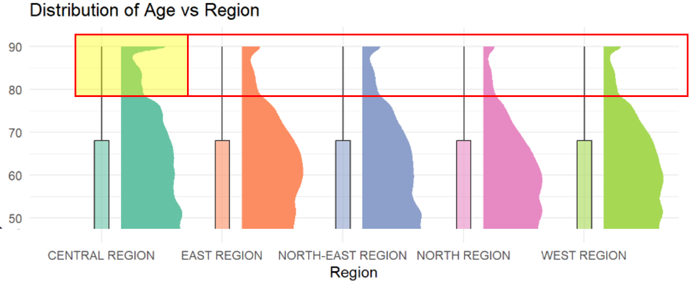

pacman::p_load(tidyverse, ggplot2, ggrepel, patchwork,
ggthemes,dplyr, xml12, sf, scales) Take-home Exercise 1
Overview
Setting the scene
A local online media company that publishes daily content on digital platforms is planning to release an article on demographic structures and distribution of Singapore in 2024.
The task
Assuming the role of the graphical editor of the media company, you are tasked to prepare at most three data visualisation for the article.
The data should be processed by using appropriate tidyverse family of packages and the data visualisation must be prepared using ggplot2 and its extensions.
Getting started
Loading packages
The following R packages are loaded using pacman::p_load() on top of the tidyverse packages:
- ggrepel: an R package provides geoms for ggplot2 to repel overlapping text labels.
- ggthemes: an R package provides some extra themes, geoms, and scales for ‘ggplot2’.
- patchwork: an R package for preparing composite figure created using ggplot2.
- dplyr: for data manipulation with the tidyverse package
- scales: for formatting and scaling data plots
- xml12: for working with HTML
- sf: for handling GIS file formats
The sf and xml12 packages were used as a dataset is extracted from a GEOJSON file later on.
Import data
The dataset “Singapore Residents by Planning Area / Subzone, Single Year of Age and Sex, June 2024” retrieved from the Department of Statistics, Singapore (DOS) will be used.
We will be importing this dataset as “sgResData24”
sgResData24 <- read_csv("data/respopagesex2024.csv")Data pre-processing
We first take a look at the data and check for:
Any missing/NULL values or entries
If any column data types need adjustments
If any new columns need to be introduced to be used for visualisations
Any duplicate entries
The dim() and head() functions to view the dimensions and preview the first few rows of the dataset using the code below:
dim(sgResData24)[1] 60424 6head(sgResData24)# A tibble: 6 × 6
PA SZ Age Sex Pop Time
<chr> <chr> <chr> <chr> <dbl> <dbl>
1 Ang Mo Kio Ang Mo Kio Town Centre 0 Males 10 2024
2 Ang Mo Kio Ang Mo Kio Town Centre 0 Females 10 2024
3 Ang Mo Kio Ang Mo Kio Town Centre 1 Males 10 2024
4 Ang Mo Kio Ang Mo Kio Town Centre 1 Females 10 2024
5 Ang Mo Kio Ang Mo Kio Town Centre 2 Males 10 2024
6 Ang Mo Kio Ang Mo Kio Town Centre 2 Females 10 2024The summary() function is used to view the basic descriptive statistics for each column, including the minimum, maximum, mean and quartiles.
summary(sgResData24) PA SZ Age Sex
Length:60424 Length:60424 Length:60424 Length:60424
Class :character Class :character Class :character Class :character
Mode :character Mode :character Mode :character Mode :character
Pop Time
Min. : 0.0 Min. :2024
1st Qu.: 0.0 1st Qu.:2024
Median : 20.0 Median :2024
Mean : 69.4 Mean :2024
3rd Qu.: 90.0 3rd Qu.:2024
Max. :1180.0 Max. :2024 The distinct() function is used to check if there are any duplicate values. The distinct() function returns unique rows.
distinct(sgResData24)# A tibble: 60,424 × 6
PA SZ Age Sex Pop Time
<chr> <chr> <chr> <chr> <dbl> <dbl>
1 Ang Mo Kio Ang Mo Kio Town Centre 0 Males 10 2024
2 Ang Mo Kio Ang Mo Kio Town Centre 0 Females 10 2024
3 Ang Mo Kio Ang Mo Kio Town Centre 1 Males 10 2024
4 Ang Mo Kio Ang Mo Kio Town Centre 1 Females 10 2024
5 Ang Mo Kio Ang Mo Kio Town Centre 2 Males 10 2024
6 Ang Mo Kio Ang Mo Kio Town Centre 2 Females 10 2024
7 Ang Mo Kio Ang Mo Kio Town Centre 3 Males 10 2024
8 Ang Mo Kio Ang Mo Kio Town Centre 3 Females 10 2024
9 Ang Mo Kio Ang Mo Kio Town Centre 4 Males 30 2024
10 Ang Mo Kio Ang Mo Kio Town Centre 4 Females 10 2024
# ℹ 60,414 more rowsFrom the output of distinct() there are 60,424 x 6 rows returned, showing that there are no duplicated rows in the dataset.
Using the count() function, we can view the unique values/names from each column
count(sgResData24,PA)# A tibble: 55 × 2
PA n
<chr> <int>
1 Ang Mo Kio 2184
2 Bedok 1456
3 Bishan 546
4 Boon Lay 728
5 Bukit Batok 1638
6 Bukit Merah 3094
7 Bukit Panjang 1274
8 Bukit Timah 1456
9 Central Water Catchment 182
10 Changi 546
# ℹ 45 more rowsThere are 55 unique planning areas
count(sgResData24,SZ)# A tibble: 332 × 2
SZ n
<chr> <int>
1 Admiralty 182
2 Airport Road 182
3 Alexandra Hill 182
4 Alexandra North 182
5 Aljunied 182
6 Anak Bukit 182
7 Anchorvale 182
8 Ang Mo Kio Town Centre 182
9 Anson 182
10 Bahar 182
# ℹ 322 more rowsThere are 332 unique subzones
count(sgResData24,Age)# A tibble: 91 × 2
Age n
<chr> <int>
1 0 664
2 1 664
3 10 664
4 11 664
5 12 664
6 13 664
7 14 664
8 15 664
9 16 664
10 17 664
# ℹ 81 more rowscount(sgResData24,Sex)# A tibble: 2 × 2
Sex n
<chr> <int>
1 Females 30212
2 Males 30212There are only 2 Sex groups - Male and Female
count(sgResData24,Time)# A tibble: 1 × 2
Time n
<dbl> <int>
1 2024 60424There is only 1 unique group for time, the year 2024, for all the rows in the dataset
🧐Observations and notes for this dataset
There are 60,424 rows and 6 columns of data.
There are no duplicate rows/ values
Column Definition and Unique Values Count 6 Columns (5 Group and 1 Count):
PA (chr type) - Planning Area (55 unique)
SZ (chr type) - Subzone (332 unique)
Age (chr type) - Age of Residents (Values: 1 to 89, 90_and_Over)
Sex (chr type) - Sex (2 unique)
Time (dbl type) - Time/ Period (1 unique)
Pop (dbl type) - Resident Count
Transforming and Aggregating Age Column
Age column is a chr type column (with “90_and_Over” as one of the values in this column). From the Age column create 2 new columns so that we can use them for our data visualisations later on:
Age_num - introduced column that transforms the data type of the Age column from chr type to dbl type. Additionally, “90_and_Over” is converted to the value 90.
Age_group - aggregating the age groups of the population together using 10 year intervals
This is performed using the mutate() and case_when() functions.
sgResData24 <- sgResData24 %>%
mutate(
# Convert age to numeric, handle "90_and_Over"
Age_num = case_when(
Age == "90_and_Over" ~ 90,
TRUE ~ suppressWarnings(as.numeric(Age)) # Avoid warnings from "90_and_Over"
),
# Group into age bands
Age_group = case_when(
Age_num >= 0 & Age_num <= 9 ~ "0-9",
Age_num >= 10 & Age_num <= 19 ~ "10-19",
Age_num >= 20 & Age_num <= 29 ~ "20-29",
Age_num >= 30 & Age_num <= 39 ~ "30-39",
Age_num >= 40 & Age_num <= 49 ~ "40-49",
Age_num >= 50 & Age_num <= 59 ~ "50-59",
Age_num >= 60 & Age_num <= 69 ~ "60-69",
Age_num >= 70 & Age_num <= 79 ~ "70-79",
Age_num >= 80 & Age_num <= 89 ~ "80-89",
Age_num >= 90 ~ "90+",
TRUE ~ NA_character_
)
)We can then check our adjusted dataset using the print() function below:
print(sgResData24)# A tibble: 60,424 × 8
PA SZ Age Sex Pop Time Age_num Age_group
<chr> <chr> <chr> <chr> <dbl> <dbl> <dbl> <chr>
1 Ang Mo Kio Ang Mo Kio Town Centre 0 Males 10 2024 0 0-9
2 Ang Mo Kio Ang Mo Kio Town Centre 0 Females 10 2024 0 0-9
3 Ang Mo Kio Ang Mo Kio Town Centre 1 Males 10 2024 1 0-9
4 Ang Mo Kio Ang Mo Kio Town Centre 1 Females 10 2024 1 0-9
5 Ang Mo Kio Ang Mo Kio Town Centre 2 Males 10 2024 2 0-9
6 Ang Mo Kio Ang Mo Kio Town Centre 2 Females 10 2024 2 0-9
7 Ang Mo Kio Ang Mo Kio Town Centre 3 Males 10 2024 3 0-9
8 Ang Mo Kio Ang Mo Kio Town Centre 3 Females 10 2024 3 0-9
9 Ang Mo Kio Ang Mo Kio Town Centre 4 Males 30 2024 4 0-9
10 Ang Mo Kio Ang Mo Kio Town Centre 4 Females 10 2024 4 0-9
# ℹ 60,414 more rowsAggregate Planning Area (PA Column) into NSEW & Central Regions of Singapore
Referencing the URA 2019 masterplan map, we can group the Planning Areas into the different North, South, East, West and Central regions of Singapore.
We reference this from the GEOJSON data obtained from this data.gov.sg website link.
Extracting the Town(PA) and Region data from the GeoJSON file
The sf package is used here to help extract the spatial vector data from the GEOJSON data to extract the Town and Regions of Singapore.
#Install required packages if not already installed
library(sf)
library(xml2)
library(dplyr)
# Load the GeoJSON file
geo_data <- st_read("data/MasterPlan2019PlanningAreaBoundaryNoSea.geojson")Reading layer `MasterPlan2019PlanningAreaBoundaryNoSea' from data source
`C:\NJYao\ISSS608-VAA\Take-home_Ex\Take-home_Ex01\data\MasterPlan2019PlanningAreaBoundaryNoSea.geojson'
using driver `GeoJSON'
Simple feature collection with 55 features and 2 fields
Geometry type: MULTIPOLYGON
Dimension: XY
Bounding box: xmin: 103.6057 ymin: 1.158699 xmax: 104.0885 ymax: 1.470775
Geodetic CRS: WGS 84# Function to parse HTML and extract PLN_AREA_N and REGION_N
extract_info <- function(html_str) {
doc <- read_html(html_str)
rows <- xml_find_all(doc, ".//tr")
# Loop through rows and extract key-value pairs
data <- lapply(rows, function(row) {
th <- xml_text(xml_find_first(row, ".//th"))
td <- xml_text(xml_find_first(row, ".//td"))
if (!is.na(th) && !is.na(td)) {
return(setNames(list(td), th))
} else {
return(NULL)
}
})
# Combine and extract specific fields
info <- do.call(c, data)
list(
Town = info[["PLN_AREA_N"]],
Region = info[["REGION_N"]]
)
}
# Apply the extraction function to each row
info_list <- lapply(geo_data$Description, extract_info)
# Combine results into a data frame
info_df <- bind_rows(info_list) %>% distinct() %>% arrange(Region, Town)
# View result
print(info_df)# A tibble: 55 × 2
Town Region
<chr> <chr>
1 BISHAN CENTRAL REGION
2 BUKIT MERAH CENTRAL REGION
3 BUKIT TIMAH CENTRAL REGION
4 DOWNTOWN CORE CENTRAL REGION
5 GEYLANG CENTRAL REGION
6 KALLANG CENTRAL REGION
7 MARINA EAST CENTRAL REGION
8 MARINA SOUTH CENTRAL REGION
9 MARINE PARADE CENTRAL REGION
10 MUSEUM CENTRAL REGION
# ℹ 45 more rowsFrom the output of the above print(info_df), we have a 55x2 table of “Town” and “Region” which we can then use for joining with our sgResData24 dataset.
To prepare our data for joining we first transform our sgResData24 dataset’s “PA” column data to uppercase to match the info_df dataset “Town” data for joining later
sgResData24 %>% mutate(PA = toupper(PA))# A tibble: 60,424 × 8
PA SZ Age Sex Pop Time Age_num Age_group
<chr> <chr> <chr> <chr> <dbl> <dbl> <dbl> <chr>
1 ANG MO KIO Ang Mo Kio Town Centre 0 Males 10 2024 0 0-9
2 ANG MO KIO Ang Mo Kio Town Centre 0 Females 10 2024 0 0-9
3 ANG MO KIO Ang Mo Kio Town Centre 1 Males 10 2024 1 0-9
4 ANG MO KIO Ang Mo Kio Town Centre 1 Females 10 2024 1 0-9
5 ANG MO KIO Ang Mo Kio Town Centre 2 Males 10 2024 2 0-9
6 ANG MO KIO Ang Mo Kio Town Centre 2 Females 10 2024 2 0-9
7 ANG MO KIO Ang Mo Kio Town Centre 3 Males 10 2024 3 0-9
8 ANG MO KIO Ang Mo Kio Town Centre 3 Females 10 2024 3 0-9
9 ANG MO KIO Ang Mo Kio Town Centre 4 Males 30 2024 4 0-9
10 ANG MO KIO Ang Mo Kio Town Centre 4 Females 10 2024 4 0-9
# ℹ 60,414 more rowsAdditionally, we rename the info_df dataset’s “Town” column into “PA” using the mutate() function.
We can then perform a left_join of the sgResData24 “PA” column with the info_df dataset’s “PA” column to introduce the Region Column into sgResData24 dataset.
library(dplyr)
# Rename Town to PA in the region info dataframe
region_info <- info_df %>% rename(PA = Town)
# left join sgResData24 with region_info to get Region column
sgResData24 <- sgResData24 %>% mutate(PA = toupper(PA)) %>%
left_join(region_info, by = "PA")
print(sgResData24)# A tibble: 60,424 × 9
PA SZ Age Sex Pop Time Age_num Age_group Region
<chr> <chr> <chr> <chr> <dbl> <dbl> <dbl> <chr> <chr>
1 ANG MO KIO Ang Mo Kio Town … 0 Males 10 2024 0 0-9 NORTH…
2 ANG MO KIO Ang Mo Kio Town … 0 Fema… 10 2024 0 0-9 NORTH…
3 ANG MO KIO Ang Mo Kio Town … 1 Males 10 2024 1 0-9 NORTH…
4 ANG MO KIO Ang Mo Kio Town … 1 Fema… 10 2024 1 0-9 NORTH…
5 ANG MO KIO Ang Mo Kio Town … 2 Males 10 2024 2 0-9 NORTH…
6 ANG MO KIO Ang Mo Kio Town … 2 Fema… 10 2024 2 0-9 NORTH…
7 ANG MO KIO Ang Mo Kio Town … 3 Males 10 2024 3 0-9 NORTH…
8 ANG MO KIO Ang Mo Kio Town … 3 Fema… 10 2024 3 0-9 NORTH…
9 ANG MO KIO Ang Mo Kio Town … 4 Males 30 2024 4 0-9 NORTH…
10 ANG MO KIO Ang Mo Kio Town … 4 Fema… 10 2024 4 0-9 NORTH…
# ℹ 60,414 more rowsThe output of print(sgResData24) shows the addition of the “Region” column.
We can perform the checks performed above to verify that the new columns introduced do not have any issues before proceeding with the visualisations.
The dim() and head() functions to view the dimensions and preview the first few rows of the dataset using the code below:
dim(sgResData24)[1] 60424 9head(sgResData24)# A tibble: 6 × 9
PA SZ Age Sex Pop Time Age_num Age_group Region
<chr> <chr> <chr> <chr> <dbl> <dbl> <dbl> <chr> <chr>
1 ANG MO KIO Ang Mo Kio Town C… 0 Males 10 2024 0 0-9 NORTH…
2 ANG MO KIO Ang Mo Kio Town C… 0 Fema… 10 2024 0 0-9 NORTH…
3 ANG MO KIO Ang Mo Kio Town C… 1 Males 10 2024 1 0-9 NORTH…
4 ANG MO KIO Ang Mo Kio Town C… 1 Fema… 10 2024 1 0-9 NORTH…
5 ANG MO KIO Ang Mo Kio Town C… 2 Males 10 2024 2 0-9 NORTH…
6 ANG MO KIO Ang Mo Kio Town C… 2 Fema… 10 2024 2 0-9 NORTH…The summary() function is used to view the basic descriptive statistics for each column, including the minimum, maximum, mean and quartiles.
summary(sgResData24) PA SZ Age Sex
Length:60424 Length:60424 Length:60424 Length:60424
Class :character Class :character Class :character Class :character
Mode :character Mode :character Mode :character Mode :character
Pop Time Age_num Age_group
Min. : 0.0 Min. :2024 Min. : 0 Length:60424
1st Qu.: 0.0 1st Qu.:2024 1st Qu.:22 Class :character
Median : 20.0 Median :2024 Median :45 Mode :character
Mean : 69.4 Mean :2024 Mean :45
3rd Qu.: 90.0 3rd Qu.:2024 3rd Qu.:68
Max. :1180.0 Max. :2024 Max. :90
Region
Length:60424
Class :character
Mode :character
The distinct() function is used to check if there are any duplicate values. The distinct() function returns unique rows.
distinct(sgResData24)# A tibble: 60,424 × 9
PA SZ Age Sex Pop Time Age_num Age_group Region
<chr> <chr> <chr> <chr> <dbl> <dbl> <dbl> <chr> <chr>
1 ANG MO KIO Ang Mo Kio Town … 0 Males 10 2024 0 0-9 NORTH…
2 ANG MO KIO Ang Mo Kio Town … 0 Fema… 10 2024 0 0-9 NORTH…
3 ANG MO KIO Ang Mo Kio Town … 1 Males 10 2024 1 0-9 NORTH…
4 ANG MO KIO Ang Mo Kio Town … 1 Fema… 10 2024 1 0-9 NORTH…
5 ANG MO KIO Ang Mo Kio Town … 2 Males 10 2024 2 0-9 NORTH…
6 ANG MO KIO Ang Mo Kio Town … 2 Fema… 10 2024 2 0-9 NORTH…
7 ANG MO KIO Ang Mo Kio Town … 3 Males 10 2024 3 0-9 NORTH…
8 ANG MO KIO Ang Mo Kio Town … 3 Fema… 10 2024 3 0-9 NORTH…
9 ANG MO KIO Ang Mo Kio Town … 4 Males 30 2024 4 0-9 NORTH…
10 ANG MO KIO Ang Mo Kio Town … 4 Fema… 10 2024 4 0-9 NORTH…
# ℹ 60,414 more rowsData Visualisation
Population Pyramid Plot Visualisation
Plotting Age Group against the Population Count using a population pyramid
The ggplot and dplyr library will be used for this visualisation.
We first calculate the total population by summing the Pop and calculate other the values that will be used for labelling values for each group in the population pyramid using mutate(), summarise() and group_by() functions. Then we set the levels for the Age_groups so that the axis labels will be ordered in ascending order. The Pop values for the Males then have to be flipped into -ve values by using the mutate() and ifelse() functions.
The population pyramid is then plot using ggplot, with the respective packages to adjust the aesthetic aspects of the plot such as defining the fill to show segregate the plot by Sex.There are also data labels added for the % of total population and count for each group of the pyramid plot.

library(ggplot2)
library(dplyr)
library(scales)
# Summarise and compute plot values
pop_pyramid <- sgResData24 %>%
group_by(Age_group, Sex) %>%
summarise(Pop = sum(Pop), .groups = "drop") %>%
group_by(Sex) %>%
mutate(Percent = Pop / sum(Pop) * 100) %>%
ungroup()
# Order Age_group for proper vertical alignment
age_levels <- c("0-9", "10-19", "20-29", "30-39", "40-49",
"50-59", "60-69", "70-79", "80-89", "90+")
pop_pyramid$Age_group <- factor(pop_pyramid$Age_group, levels = age_levels)
# Flip male values to negative
pop_pyramid <- pop_pyramid %>%
mutate(Pop_plot = ifelse(Sex == "Males", -Pop, Pop),
Label = paste0(comma(abs(Pop)), "\n(", round(abs(Percent), 1), "%)"))
# Plot
ggplot(pop_pyramid, aes(x = Age_group, y = Pop_plot, fill = Sex)) +
geom_bar(stat = "identity", width = 0.8, position = "identity") +
coord_flip() +
geom_text(aes(label = Label),
position = position_nudge(y = ifelse(pop_pyramid$Sex == "Males", -50000, 10000)),
hjust = ifelse(pop_pyramid$Sex == "Male", 1, 0),
size = 4, color = 'black') +
scale_y_continuous(labels = function(x) comma(abs(x)), expand = expansion(mult = c(0.1, 0.1))) +
scale_fill_manual(values = c("Males" = "#619CFF", "Females" = "#F8766D")) +
labs(title = "Population vs Age Group & Sex",
subtitle = " Males Females",
x = "Age Group", y = "Population Count") +
theme_minimal()+
theme(
plot.margin = margin(10, 20, 20, 20), # top, right, bottom, left
legend.position = "none",
axis.text.x = element_text(size = 12),
axis.text.y = element_text(size = 12),
axis.title.x = element_text(size = 14),
axis.title.y = element_text(size = 14),
plot.title = element_text(size = 18),
plot.subtitle = element_text(size = 14)
)Observation from the Plot
From the population pyramid chart, we can observe that the Age group of 30-39 has the largest population (14.9% + 15.4% of the overall population), and the largest population for both males and females respectively as well.
We can also observe an aging population based on the shape of the population pyramid chart, with the 0-9, 10-19 and 20-29 Age group populations being lesser than the 30-39 Age group.
Bar Chart Visualisation of Region vs Population and Sex
Plotting Region vs Population and Sex.
The ggplot and dplyr library will be used for this visualisation.
We first calculate the total population by summing the Pop and calculate other the values that will be used for labelling values (the % and total group count) for each group in the bar chart using mutate(), summarise() and group_by() functions.
The bar chart is then plotted using ggplot, with the respective packages to adjust the aesthetic aspects of the plot such as the addition of the total count and percentages for Males and Females within each group.

#Compute total population by Region and Sex
stacked_data_region <- sgResData24 %>%
group_by(Region, Sex) %>%
summarise(Pop = sum(Pop, na.rm = TRUE), .groups = "drop") %>%
group_by(Region) %>%
mutate(Percent = Pop / sum(Pop) * 100)
#Compute total population for each Region group (for total label)
labels_data_region <- stacked_data_region %>%
group_by(Region) %>%
summarise(Pop = sum(Pop))
#Plot stacked bars with percent labels inside and total on top
ggplot(stacked_data_region, aes(x = Region, y = Pop, fill = Sex)) +
geom_bar(stat = "identity") +
geom_text(aes(label = paste0(round(Percent), "%")),
position = position_stack(vjust = 0.5), size = 5, color = "white") +
geom_text(data = labels_data_region, aes(x = Region, y = Pop, label = comma(Pop)),
vjust = -0.5, size = 5, inherit.aes = FALSE) +
labs(x = "Region", y = "Population", title = "Population vs Region & Sex") +
scale_y_continuous(labels = function(x) comma(abs(x)), expand = expansion(mult = c(0.1, 0.1))) +
theme_minimal() +
theme(
axis.text.x = element_text(size = 12, angle = 45, hjust = 1),# Rotate x-axis labels and adjust alignment
axis.text.y = element_text(size = 12),
axis.title.x = element_text(size = 14),
axis.title.y = element_text(size = 14),
plot.title = element_text(size = 18),
legend.position = 'bottom', legend.text = element_text(size=12),
legend.title = element_text(size = 14)
)Observation from the Plot
From the Bar chart, we can observe that the North-East Region has the highest population, followed by the Central and then West region. Based on the percentages observed for all 5 regions, we can also tell that there are more Females than Male in the population, with Males having 48 to 49% and Females having 51 to 52%. It can also be observed that the West Region has a greater proportion of Females(52%) compared to Males(48%).
Half-eye + Box Plot Visualisation of Age vs Region
Plotting the Distribution of Age vs Region
The ggplot, dplyr and ggdist library will be used for this visualisation.
We first calculate the mean for each group to label the weighted means in the visualisation (using Age_num and Pop as the weight).
The chart is then plotted using ggplot to plot a half-eye plot (together with ggdist) and boxplot together. The other respective packages are used to adjust the aesthetics of the plo such as ith the weighted mean calculated earlier indicated with a red point in each boxplot using geompoint(). Each Region group is also assigned a different colour to help differentiate each group visually.

library(ggplot2)
library(dplyr)
library(ggdist)
# Compute weighted mean for each region
mean_labels <- sgResData24 %>%
group_by(Region) %>%
summarise(mean_age = weighted.mean(Age_num, Pop))
# Plot with mean labels
ggplot(sgResData24, aes(x = Region, y = Age_num, fill = Region)) +
stat_halfeye(
aes(weight = Pop, fill = Region),
adjust = 0.5,
width = 0.6,
justification = -0.3,
.width = 0,
point_colour = NA
) +
geom_point (data = mean_labels, aes(x = Region, y = mean_age), shape = 20, size = 5, color = "red") +
geom_boxplot(
width = .12,
outlier.shape = NA,
alpha = 0.6
) +
geom_text(
data = mean_labels,
aes(x = Region, y = mean_age, label = round(mean_age, 1)),
#vjust = -0.8,
hjust = 1.7,
color = "red",
fontface = "bold",
size = 4
) +
scale_y_continuous(breaks = seq(0, max(sgResData24$Age_num), by = 10))+
scale_fill_brewer(palette = "Set2") +
theme_minimal() +
theme(
legend.position = "none",
axis.text.x = element_text(size = 12),# Rotate x-axis labels and adjust alignment
axis.text.y = element_text(size = 12),
axis.title.x = element_text(size = 14),
axis.title.y = element_text(size = 14),
plot.title = element_text(size = 18),
) +
labs(x = "Region", y = "Age", title = "Distribution of Age vs Region")
Use The Correct Data Variable with Correct Data Type
Use Age_num (dbl type) instead of Age (chr type) for this Distribution plot
Observation from the Plot
We can view that the distribution of the age of the population across the region is the same, with roughly the same median as well based on the boxplot median position. However, it can be observed that the mean age are different for each region, with Central having the highest(44.1), followed by East(42.6) and West(41.6). The higher mean in Central Region may indicate a greater proportion of older people living in these areas compared to other Regions.
This can also be observed from the distribution seen with the half-eye plot, where the end of the distribution graph shows a higher distribution of population above the age of around 80 compared to the other regions as shown in the screenshot below:
